欢迎页面
1:产品概述(1-1:产品功能)
1-2:条款分类
1-3:条款类型
1-4:评审表述式
1-5:评审结果
2:后台管理
2-1:评审管理
2-2:用户管理
2-3:任务分工
2-4:基本信息
3:评审中心
3-1:条款状态
3-2:评审步骤(3-2-1:自评)
3-2-2:审 评
3-2-3:统 计
等级医院评审系统是为了协助医院完成综合医院评审工作而研发的一套软件。该系统部署快速，操作便利，给医院繁重的评审工作带来了便捷、精准、高效的自评途径。此评审系统针对三级、二级、一级不同等级，综合、专科不同类型的医院及卫生部颁布的不同版本的评审标准细则定期更新和维护，无需医院手工更新。每次评审开始时，医院审评管理员将相关条款评定工作分配至各责任科室或者是责任人。相关人员(即自评负责人)进入系统后可以看到自己要完成的评审条款。其需根据实际情况，将所负责条款进行自评并上传相关证明文档进行佐证。待自评负责人将自评结果提交后，审评负责人便可对条款进行需要的审批工作并做出修正，最终确定本次评审每条条款的结果。在统计功能里面，各级领导及审评负责人可以就每次评审结果进行统计分析及明细查看，及时发现医院管理、医疗质量管理的薄弱环节，督促相关部门、科室及责任人进行整改，以推动评审工作的顺利进行。
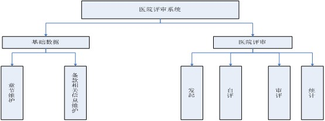根据医院评审标准重心及各条款的适用范围，条款可分为核心条款、基本条款、可选条款和重点条款四类。
①核心条款：为保持医院的医疗质量与患者安全，对那些最基本、最常用、最易做到、必须做好的标准条款，且若未达到合格以上要求，势必影响医疗安全与患者权益的标准，列为“核心条款”，带有★标志。
②基本条款：适用于所有二级综合医院（含县医院）。
③可选条款：主要是指可能由于区域卫生规划与医院功能任务的限制，或是由于政府特别控制，需要审批，而不是由医院自行决定即可展开的项目。
④重点条款：一段时期内医疗卫生工作的侧重面，即与该时期医疗卫生工作重点任务和要求相关的条款。
⑤全部条款：包含了等级医院评审的所有条款，核心条款、基本条款、可选条款和重点条款也都包括在内。
根据各职能部门岗位职责的不同，条款又分为12类，分别是：行政、医疗、护理、药事、服务、院感、质控、科教、后勤、财务、管理、信息，以方便条款的查询及评审工作分配。
①评审采用A、B、C、D、E五档表达方式
A-优秀
B-良好
C-合格
D-不合格
E-不适用，是指卫生行政部门根据医院功能任务未批准的项目，或同意不设置的项目。
判定原则是要达到“B-良好”档者，必须先符合“C-合格”档的要求，要到“A-优秀”，必须先符合“B-良好”档的要求。
②标准条款的性质结果
评分说明的制定遵循 PDCA循环原理，P即Plan，D即Do，C即Check，A即Act，通过质量管理计划的制订及组织实现的过程，实现医疗质量和安全的持续改进。 由于标准条款的性质不同，结果表达见表1
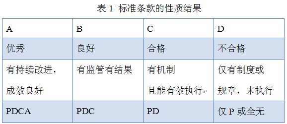后台管理是供医院审评活动管理者（审评管理员）维护医院基本信息、启动评审工作、进行医院等级评审工作任务分配、关闭评审活动的平台。管理员通过“管理登录”进入等级医院评审系统后台管理中心，即可进行 “评审管理”“用户管理”“任务分工”“基本信息”的数据维护。
评审管理用于评审的发起与关闭，是医院进行等级评审工作的闸阀。评审的发起是医院评审工作的开始，如果系统中正在进行一次评审，则不能发起第二次评审，直至第一次评审结束后才能再次发起。
①发起评审：选择起评日期、终止日期，并输入内容摘要，点击“发起评审”按钮便顺利开启评审工作。如下图
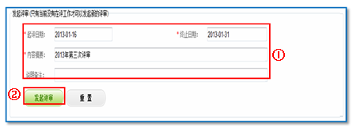②发起评审重置：“重置”功能可以快速地清空之前的设置。当欲修改将要发起的评审的具体内容时，点击“重置”按钮，则之前设置的数据就会完全清空。当前若存在正在进行的评审工作，则无法发起新的评审。如下图
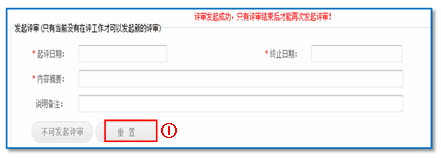③关闭评审：已经发起的评审会依据评审终止日期自动停止评审活动。若欲强制终止正在进行的评审工作，点击“点击关闭”按钮并确认关闭即可。
用户管理是等级医院评审工作的开始，也是评审工作重要的一步。在用户管理中，审评管理员可以对用户进行新增、修改、删除等操作，并根据评审需要设置用户角色（自评负责人、审评负责人、审评管理员），见下图
①新增用户：点击“新增”按钮，录入用户信息并选择用户角色及状态（是否禁用），点击“保存”。
②修改用户：选择需要修改的用户并点击“修改”按钮，修改用户相关信息，点击“保存”。
③删除用户：选择需要删除的用户并点击“删除”按钮并确认。
④禁用用户：选择需要禁用的用户并点击“禁用”按钮，此用户则处于禁用状态，无法登陆等级医院评审系统。
⑤启用用户：若欲激活已禁用的用户，选择需要启用的用户并点击“启用”按钮，此用户即可登陆等级医院评审系统进行相关操作。
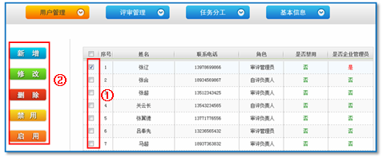任务分工是保证评审工作顺利进行的关键环节。审评管理员可根据实际情况将评审工作分配给各负责人，并督促各条款负责人（即自评负责人）各司其职，确保评审工作有条不紊地进行。
①查询目标条款：选择评审章节，在目标章节被选中后，设定条款条件，点击“查询”，则展示符合查询条件的条款。
②单个条款负责人设置： “负责人设置”即对单条条款设置自评负责人。按照上述方法查询目标条款，选中条款并点击“负责人设置”按钮，跳入负责人设置页面，选择该条款负责人并保存即可，见下图。
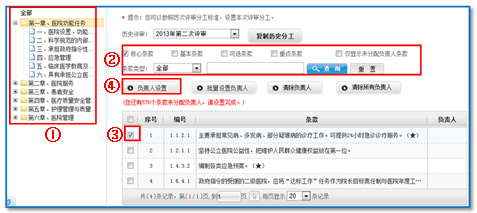③批量设置负责人：“批量设置负责人”即同时对多条条款设置同一位自评负责人。按照上述方法查询目标条款，选中多条条款（点击表格最上端的复选框，可全选当前页面中的全部条款）并点击“批量设置负责人”按钮，跳入负责人设置页面，选择这些条款的负责人并保存即可，见下图。
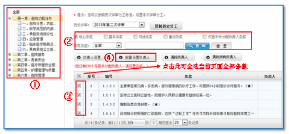④复制历史分工：“复制历史分工”是指将已选中的历次分工设置为本次任务的分工。在“历史评审”选择框中选择已完成的评审，点击“复制历史分工”按钮即可，见下图。
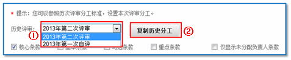基本信息中展示了医院的基本信息，在此模块中，审评管理员可以对医院基本信息及登陆密码进行维护。
①基本信息：点击“基本信息”按钮，录入医院基本信息，点击“保存”。
②修改密码：点击“修改密码”按钮，按照系统提示对密码进行修改，点击“保存”。
评审中心涵盖条款自评、条款审评及评审结果统计与分析功能，用于医院自我评价与改进，是评审活动的核心部分。自评及审评负责人通过“用户登录”进入等级医院评审系统的用户评审中心，就已分配的任务逐条开展评审工作。此外，审评负责人及审评管理员还可通过此用户评审中心查看评审结果，及时发现评审工作中的薄弱环节，继而有针对性地对存在的问题采取改善措施。
条款状态是指条款当前所处的评审状态。不同状态的条款所支持的操作有所不同。
①自评状态
a 未评：还没有进行自评操作，不能审评。
b 已评：已经进行自评并保存，由于未提交故不能进行审评操作，还可以修改。
c 已提交：已经进行自评并提交审评，不能修改。
②审评状态
a 未审： 未完成审评操作。
b 已审： 已经完成审评操作。
有权限看到自评菜单的人员（即自评负责人），将看到其所负责的评审条款。其需要选择相应条款进行自评，完成评审工作。
①选择条款章节，设定查询条件（包括条款类型、自评状态等），点击“查询”按钮，在下方展示的条款中选中目标条款，点击“自评”按钮（如下图），则跳入条款自评页面。
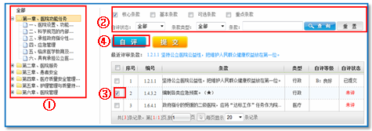②在弹出的自评页面中,依照等级参考条件选择“自评等级”，输入自评意见，并上传证明文件，然后点击“保存”（条款进入“已评”状态，还可以修改）或“提交”（条款进入“已提交”状态，即将进行审评，不能修改）按钮，即完成此条条款的自评。点击“上一条”或“下一条”就进入相应条款的自评环节，见下图。
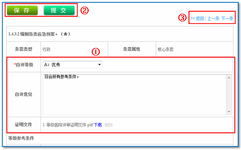审评是对自评结果的审查和确认。当自评结果提交之后，才能进行审评操作。
①选择条款章节，设定查询条件（包括条款类型、自评状态等），点击“查询”按钮，在下方展示的条款中选中目标条款，点击“审评”按钮（如图），则跳入条款审评页面。
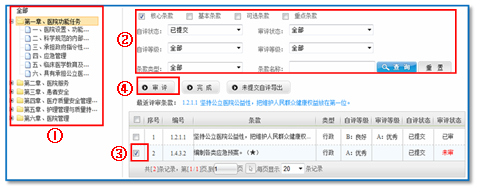②在弹出的审评页面中, 查阅证明文件，依照等级参考条件选择“审评等级”，输入审评意见，然后点击“保存”（条款信息已经保存，但仍处于“未审”状态，可以修改）或“提交”（条款进入“已审”状态，不能修改）按钮，即完成此条条款的审评。点击“上一条”或“下一条”就进入相应条款的审评环节，见下图。
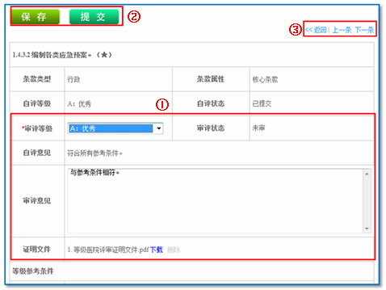③未提交自评导出：用于导出所有未提交自评条款的具体信息，见下图。
④完成：关闭此次审评活动，
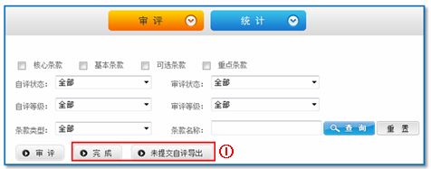统计功能为医院进行的评审工作提供了便捷的结果查看途径及可靠的决策依据。通过评审数据的统计及分析结果，医院管理者可以直观地掌握医院运营状况，及时发现医院的薄弱环节，在医院整改过程中切实做到“有章可依”，以适应即将到来的等级医院评审工作。
①评审进展统计
a)选中“在评”的评审主题（已完成评审的评审主题只能查看“评审结果”，而不能查看“评审进展”），点击“评审进展”按钮，便跳入评审活动的评审进展统计页面,见下图
b)在评审进展统计页面中，设定查询条件，点击“查询”按钮，即展示在该条件下的评审统计情况。点击其中的数据，可查阅条款的具体信息，见下图
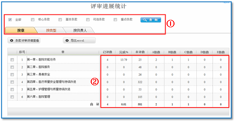②评审结果统计
a)选中评审主题，点击“评审结果”按钮（“在评”及“完成”的评审主题均可查阅评审结果），便跳入评审活动的评审结果统计页面，
见下图
b)在评审结果统计页面中，设定查询条件，点击“查询”按钮，即展示在该条件下的评审统计情况。点击其中的数据，可查阅条款的具体信息（具体操作同评审进展统计